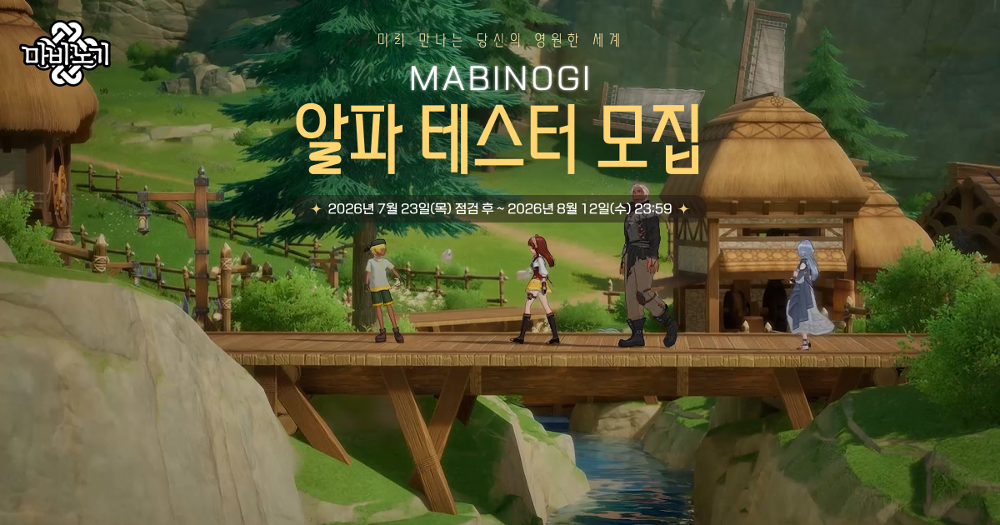

마비노기 RE:ACTION 2차 업데이트 지금까지 나온 내용, 이터니티 알파테스트 신청방법까지 (아르카나 각성 50레벨) PC온라인게임추천
※ 해당 게임에는 확률형 아이템이 포함되어 있습니다.
안녕하세요. 영원한도시입니다. 지난번에 마비노기 RE:ACTION 사전등록이랑 22주년 판타지 파티 쇼케이스 정리해 드린 지 한 달이 좀 지났는데요, 그새 1차 업데이트가 적용됐고 이제 8월 2차 업데이트 차례입니다. 이번 RE:ACTION은 마비노기 여름 캠페인으로 진행 중인 업데이트라, 8월 안에 2차까지 마무리될 예정인데요. 오늘은 2차 업데이트에서 지금까지 공식으로 나온 내용이랑, 요즘 문의가 부쩍 늘어난 마비노기 이터니티 알파 테스트 신청 방법까지 한 번에 정리해 드리겠습니다.
1차 업데이트 내용을 잠깐 되짚으면, 7월 9일 적용된 RE:ACTION 1차에서 아르카나 각성 시스템이 먼저 열렸습니다. 아르카나 레벨 50에 링크(개방) 10단계까지 동시에 채우면 [씨앗과 토양]ㆍ[흐름이 닿는 곳]ㆍ[이 땅에 속하는 것], 이렇게 각성 가이드 퀘스트 3종이 열리고요, 이걸 차례로 클리어해야 비로소 최고 30레벨까지 키울 수 있는 각성 시스템이 정식으로 열리는 구조였습니다. 각성 경험치는 지정된 던전을 클리어하면 쌓이고요, 각성 레벨이 최고치일 때 남는 경험치는 저장소에 보관되는 방식입니다. 1차 기준 보관 한도는 100만이었는데, 7월 30일 테스트 서버 공지에서 이 한도가 10만으로 변경된다고 안내됐습니다.
여기에 '오검 워드' 26종(특수 오검 5종ㆍ일반 오검 21종)이 성장 요소로 같이 붙는데, 이 워드는 그냥 모으기만 하는 게 아니라 특정 조합을 맞추면 별도 효과가 발동하는 방식이라, 주요 던전을 클리어하면서 하나씩 챙기는 재미가 있었습니다. 오검 조합은 아르카나마다 3종류씩 있는데, 1차에서는 아르카나당 2종까지만 열린 상태였고 남은 1종이 2차 업데이트에서 추가될 예정이었죠. 자세한 개념 설명은 지난 사전등록ㆍ쇼케이스 정리 글에서 이미 다뤘으니, 오늘은 여기까지만 짚고 넘어가겠습니다.
개발자 노트에 8월 2차 업데이트 예고가 짧게 붙어 있습니다.
1. RE:ACTION 2차 업데이트, 지금까지 나온 내용
오늘(8월 6일) 오후 2시 기준으로 RE:ACTION 2차 업데이트 내용은 7월 30일 테스트 서버 패치 공지에 이미 꽤 상세하게 올라와 있습니다. 앞서 공식 개발자 노트에서 8월 2차 업데이트 때 아르카나 각성 스킬을 쇼케이스에서 선보인 모습보다 더 멋진 모습으로 준비하겠다고 예고했었는데요, 그 각성 스킬이 실제로 테스트 서버 공지에 이름까지 붙어서 나왔습니다.
공식 공지 기준으로 나와 있는 2차 업데이트 예정 내용은 이렇습니다.
- 아르카나 각성 레벨 상한이 기존 30레벨에서 50레벨로 확장됩니다. 31~50레벨 누적 경험치 표까지 공지에 같이 올라와 있고요.
- 아르카나별 각성 스킬이 추가됩니다. 각성 레벨 31에서 F랭크로 습득하고 50에서 1랭크가 되는 구조고요, 엘레멘탈 카타클리즘ㆍ성광의 협주곡ㆍ도르카 임펄스ㆍ알케믹 컨버전스ㆍ참회ㆍ캐스케이드 버스트ㆍ아머먼트 살보ㆍ마그눔 오푸스ㆍ커튼콜ㆍ퓨리어스 드라이브까지 아르카나 10종 스킬명이 공개됐습니다.
- 아르카나별 오검 조합 효과가 1종씩 추가됩니다. 아르카나당 2종이던 조합이 총 3종으로 채워지는 셈입니다.
다만 위 내용은 테스트 서버 기준이라 정식 서버에 들어갈 때 수치가 손질될 수 있습니다. 실제로 8월 6일 테스트 서버 패치 공지에서도 2차 오검 조합 효과가 한 번 더 수정됐고요. 정식 적용일이랑 최종 수치는 정식 서버 패치 공지가 뜨면 그때 다시 정리해 드릴게요.
2차 업데이트에서 공개된 아르카나 각성 상한 확장ㆍ각성 스킬ㆍ오검 조합 효과입니다.
2. 마비노기 이터니티 알파 테스트, 지금 신청 가능합니다
마비노기 이터니티 일반 이용자 알파 테스트는 8월 12일까지 마비노기 공식 홈페이지 알파 테스트 모집 페이지에서 신청할 수 있습니다. 참고로 마비노기 이터니티는 넥슨이 2023년부터 진행해 온 엔진 교체 프로젝트인데, 마비노기를 오래 서비스하기 위한 프로젝트로 이번 9월 알파 테스트가 대규모 이용자를 대상으로는 첫 검증 단계입니다. 지난 사전등록 글 쓸 때만 해도 신청 방법이랑 세부 일정은 추후 공지된다고만 나와 있었는데, 이제 실제로 모집이 열려서 신청 방법까지 확인 가능합니다. 정확한 일정이랑 절차는 아래 표로 정리해 뒀는데요, 모집 페이지에 직접 들어가서 신청 과정을 확인해 보니 절차 자체는 간단하더라고요. 단순히 접속만 해 보는 테스트가 아니라, 실제 플레이 데이터를 촘촘하게 모으는 성격이 강해 보입니다.
| 항목 | 내용 |
|---|---|
| 신청 기간 | 2026.7.23(목) 점검 후 ~ 8.12(수) 23:59 |
| 신청 방법 | 공식 홈페이지 알파 테스트 모집 페이지 → 넥슨 ID 로그인 → 휴대폰 번호 확인 → 설문조사 → 신청 완료 |
| 당첨자 발표 | 2026.8.25(화) 낮 12시 |
| 테스트 기간 | 2026.9.3(목) ~ 9.6(일), 4일간 |
| 테스트 목적 | 마비노기 이터니티(엔진 교체 프로젝트) 첫 공개 테스트 · 이터니티만의 초반 플레이 체험 |
테스트 기간이 4일로 짧은 만큼, 신청하신 분들은 9월 3일부터 6일까지 일정을 미리 비워두시면 좋을 것 같습니다. 일반 모집이랑은 별개로 크리에이터 모집도 따로 진행 중인데요, 필수조건이 활동 플랫폼(치지직ㆍSOOP) N커넥트 가입이랑 유튜브 구독자ㆍ치지직ㆍSOOP 팔로워 1천 명 이상입니다. 활동 조건은 라이브 방송 1회가 필수, 관련 콘텐츠 1회 업로드가 선택이니 스트리머분들은 참고하세요. 신청 페이지는 아래 참고한 곳ㆍ버튼에서 다시 한 번 안내해 드릴게요.

이미지 출처: 마비노기 이터니티 알파 테스터 모집 페이지 · 네이버 본문에는 이 이미지를 내려받아 직접 업로드해 주세요.
보시면 모집 배너에도 기간이 그대로 박혀 있어요. 마감이 8월 12일 밤 11시 59분입니다.
자주 묻는 질문
Q. 알파 테스트에 참여하면 따로 챙길 수 있는 게 있나요?
A. 테스트 기간에 진행되는 특별 미션 '에린의 기록'이 준비돼 있습니다. 공식 모집 페이지 안내로는 리더보드 미션을 수행하면 기록에 따라 알파 테스트 한정 타이틀이랑 넥슨캐시를 준다고 하네요. 다만 어떤 미션이 나오는지는 알파 테스트가 시작된 뒤에 공개된다고 하니, 당첨되신 분들은 테스트 첫날 한 번 더 확인해 보시면 되겠습니다.
Q. RE:ACTION 2차 업데이트에서 나온 내용, 전부 확정된 건가요?
A. 아직 전부 확정은 아닙니다. 지금 나와 있는 각성 레벨 50 확장ㆍ각성 스킬 추가ㆍ오검 조합 효과 추가는 7월 30일 테스트 서버 패치 공지에 올라온 내용이라, 정식 서버로 넘어올 때 수치가 조정될 수 있습니다. 실제로 8월 6일 테스트 서버 공지에서 2차 오검 조합 효과가 한 번 더 수정됐고요. 참고로 아르카나 각성 자체는 이미 7월 9일 1차 업데이트로 실서버에 적용돼 있는 시스템이라, 오늘 글에서는 이미 적용된 내용이랑 2차에서 새로 바뀌는 내용을 나눠서 정리해 드린 겁니다. 정식 적용일은 정식 서버 패치 공지가 뜨면 그때 마저 정리해서 들고 올게요.
▶ 같이 보면 좋은 글
· 마비노기 RE:ACTION 사전등록 보상 정리, 22주년 판타지 파티 쇼케이스 총정리 (네이버에서 해당 글 링크를 직접 넣어 주세요)
참고한 곳
· [공지] (수정) 7/9(목) 정식 서버 패치 작업 변경점 안내
· [공지][수정] 7/30(목) 테스트 서버 패치 작업 변경점 안내
· [공지] 8/6(목) 테스트 서버 패치 작업 변경점 안내
· [개발자노트] [적용됨] RE:ACTION 1차 업데이트
· [공지] 마비노기 이터니티 알파 테스터 모집 (7/23~8/12)
· [공지] 마비노기 이터니티 알파 테스트 크리에이터 모집
· [이터니티 개발 기록] 마비노기 이터니티의 첫 공개 테스트
· 마비노기 이터니티 알파 테스터 모집 이벤트 페이지
해당 게임에는 확률형 아이템이 포함되어 있습니다.